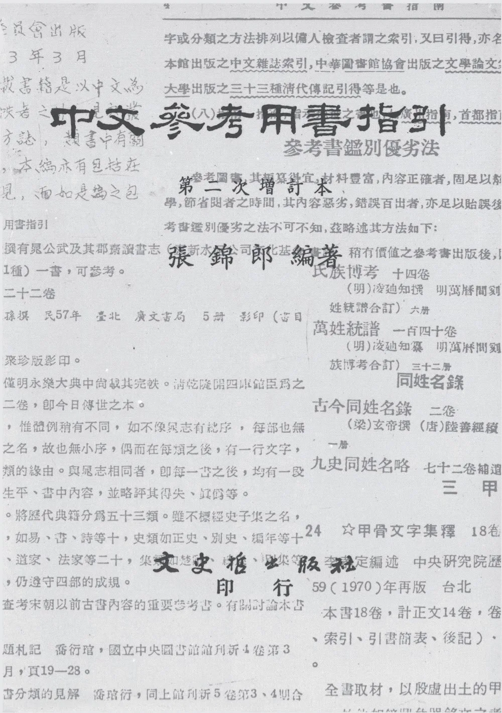

中國目錄學
NT$ 300
圖書館行政
NT$ 280
中國圖書館事業史
NT$ 360

古書版本鑑定研究
NT$ 420

科學博物館教育活動的理論與實際
NT$ 440

中文參考用書指引（二次增訂本）
NT$ 1000

中文參考用書指引（二次增訂本）
NT$ 0

圖書印刷發展史論文集(平裝)
NT$ 0

圖書印刷發展史論文集(精裝)
NT$ 420

圖書印刷發展史論文集續集(平裝)
NT$ 0

圖書印刷發展史論文集續集(精裝)
NT$ 500

中文古籍整理分類研究
NT$ 520

縮影圖書資料管理
NT$ 500

縮影圖書資料管理(精)
NT$ 600

國際標準書目著錄發展史研究
NT$ 360

英美編目規則第二版釐訂原理之探討
NT$ 280

公共圖書館的經營管理
NT$ 440
博物館藏品徵集與登錄管理之研究
NT$ 0

中國目錄學
NT$ 300

日本九州大學文學部書庫漢籍目錄
NT$ 340

知識的門徑－圖書館•讀書與出版
NT$ 350
日本九州大學文學部書庫明版圖錄
NT$ 450

圖書館的參考服務：理論與實務
NT$ 440

兩岸暨港澳出版事業的發展與整合
NT$ 440

美國圖書館名人傳略
NT$ 520
古籍整理自選集
NT$ 420

臺灣近五十年文心雕龍研究論著摘要
NT$ 260
出版品國際交換研究
NT$ 480

出版人瑣記
NT$ 450